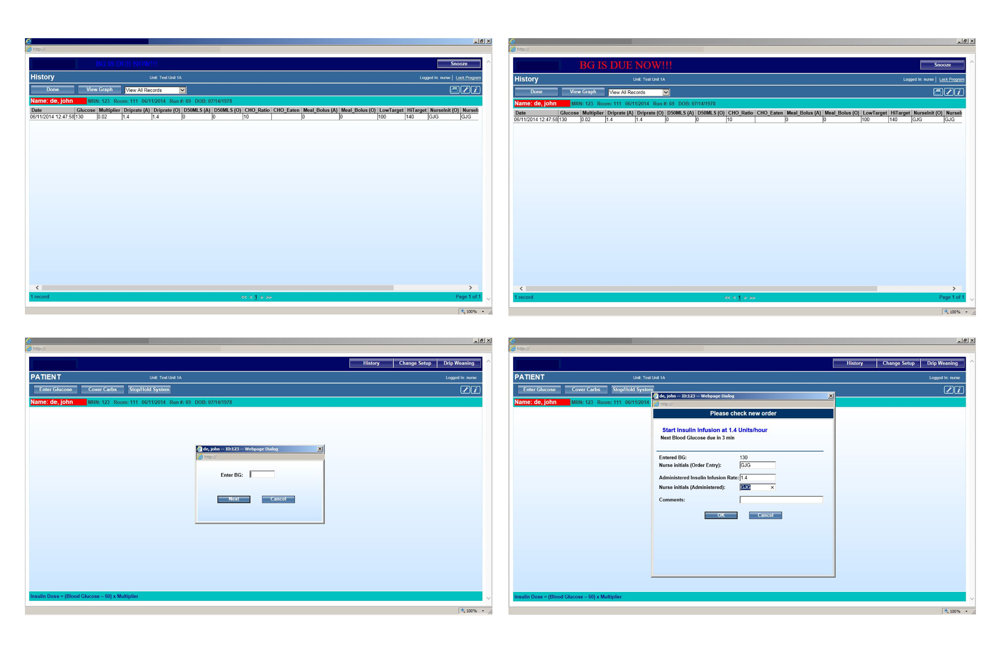
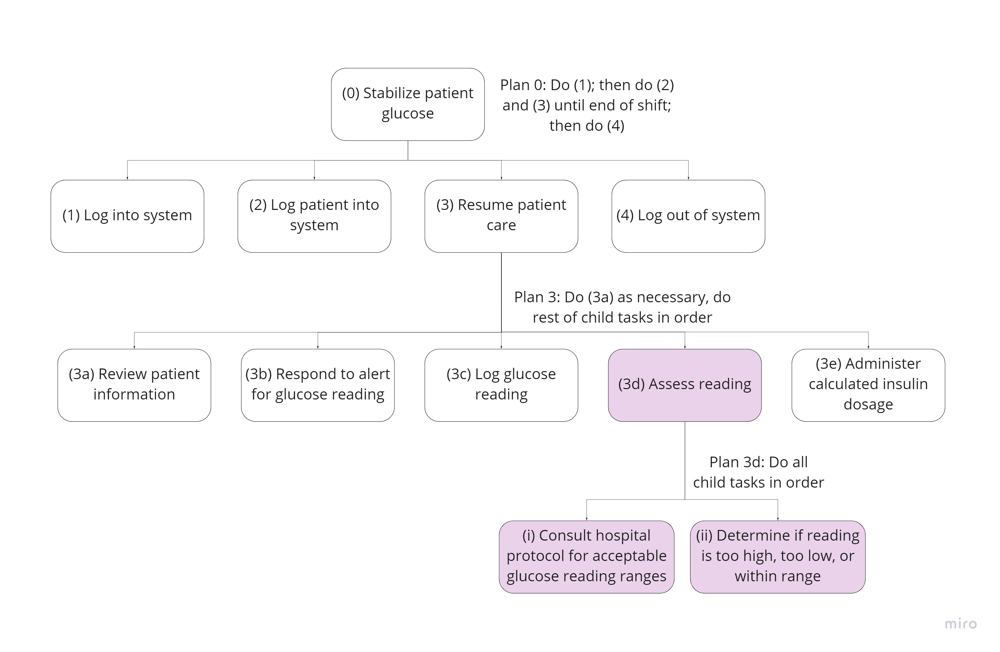

Glucose Control Interface Redesign
Increasing responsiveness and accuracy in patient glucose monitoring

what it is
A blood glucose monitoring interface that provides greater visibility, context, and error prevention while nurses take blood glucose measurements and administer insulin to patients.
main features
- Clear alarm indicator for time until next blood glucose reading
- Streamlined one-screen process for glucose reading and insulin administration
- Visual display of patient history
- Mobile application counterpart allowing nurses to check patient alarms on the go
what i did
Role: User interface designer, user experience designer
Skills: Hierarchical task analysis, wireframes, mockups
context
3 month team project for Human Machine Interface course
This interface is used in intensive care units (ICUs) to monitor patients’ blood glucose (BG) levels according to hospital protocol. Nurses take BG readings at time intervals specified by protocols and patient stability, enter the readings into the interface, and administer the proper dosage of insulin to the patient as calculated by the interface based on the BG entry.
process
research
user analysis
Since nurses were essentially the only clinicians using this interface, we identified our two user groups as:
- Nurses starting a new shift that need time to adjust to the system and review patient statuses but are not as prone to tiredness; would benefit from greater visibility and understandability of patient history
- Nurses ending an 8-12 hour shift that are more prone to mental lapses but are more acclimated to the system and patients; would benefit from error prevention and error recovery
existing system
interface screens
The upper two screens show patient history with a nearly hidden alarm indicator at the top. The lower two screens show the process of entering the BG reading and confirming the calculated insulin dosage.
HTA of existing system
The following simplified hierarchical task analysis (HTA) with highlighted pain points was created for the existing interface.
shortfalls
The following shortfalls were gatherered from a heuristic evaluation of the existing interface and the creation of the HTA. Since the BG and insulin tasks are time-sensitive, there was a heavy emphasis on the importance of the BG reading alarm time display.
- Lack of visibility for BG reading alarm may prevent nurses from delivering proper and timely patient care
- Context of patient history not provided or available while logging BG reading and viewing insulin dosage, which means nurses may not detect irregular levels or trends in the readings
- Lack of visual hierarchy and inefficient use of screen real estate, so nurses aren't guided to the most pertinent information
- No error prevention or recovery for mistakes in logging information
problem
How might we redesign the glucose control interface to facilitate patient care in a time-sensitive ICU environment?
ideation
From our research phase, we determined the following to be the most important information to nurses:
- Basic patient information and patient history
- Time until next blood glucose reading
- Whether BG levels are in an acceptable range
- Insulin dosage based on BG levels
I created the following HTA for our envisioned interface based on the pain points discovered during research such as lack of error prevention and context.
first iteration: use case

improvements to be made
Although the first iteration improved upon the last by increasing visibility of important information and displaying information in context, it was still functionally very similar to the existing system. These were highlighted changes to be made:
- Prioritize visibility of BG alarm over patient identifying information since the BG alarm is time-sensitive
- Give greater prominence to BG entry on the screen since it's the primary task of the interface
- Condense the process of logging BG reading to one screen so that all required information is available at the same time
design
Visibility of patient information: Identifying information and patient status is clearly displayed to minimize adjustment period for nurses starting a new shift
Understandability of patient history: Visual display of last reading with the context of acceptable ranges and BG history improves nurses' understanding of current patient status
Disabled blood glucose entry: Prevents nurse from erroneously entering BG readings before alarm goes off
Mobile patient display: Allows nurses to view information on the go
Visibility of blood glucose alarm: Redundancy in the color, icon, remaining time, and snooze button clearly indicates that the nurse needs to take a BG reading
Streamlined blood glucose and insulin process: BG entry and insulin dosage administration are done in one page, so nurses don't need to spend time navigating through multiple screens in the time-sensitive ICU environment
Error prevention: System checks BG entries against patient history and realistic BG threshold levels to prevent nurses from making errors
Mobile overview of all alarms: Allows nurses to remain aware of and anticipate upcoming BG readings
next steps
Due to the nature of this course, we weren’t given the opportunity to interact with medical professionals, which limited our research efforts. Observing nurses interacting with this system in real-time or interviewing nurses would have provided valuable insights into how this system is used and viewed by one of the most important stakeholder groups: users. Based on feedback by course instructors, next steps for this interface include:
- Reconsidering the disabling of the BG panel when there’s still time left on the BG alarm so nurses aren’t completely restricted from entering BG readings
- Simplifying the information displayed in the BG History graph to minimize clutter